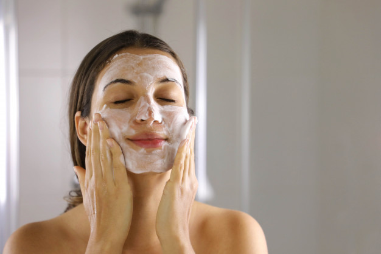
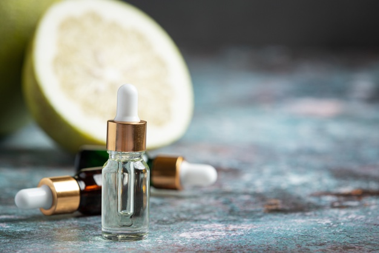
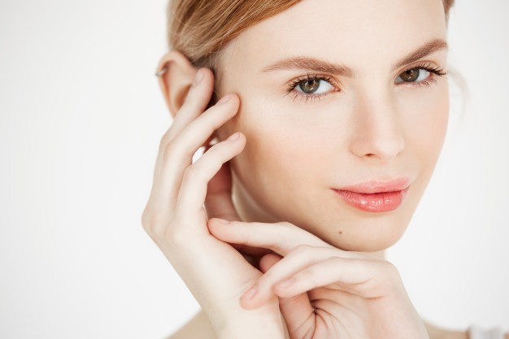
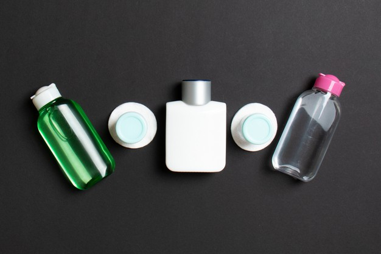
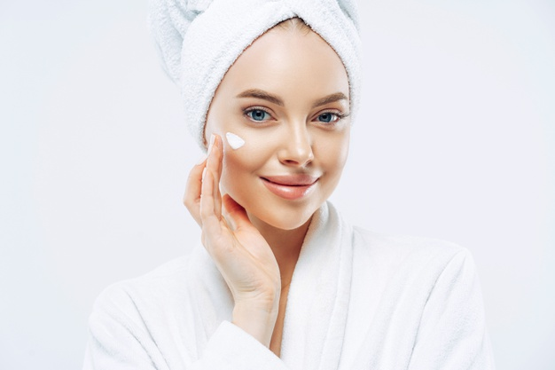
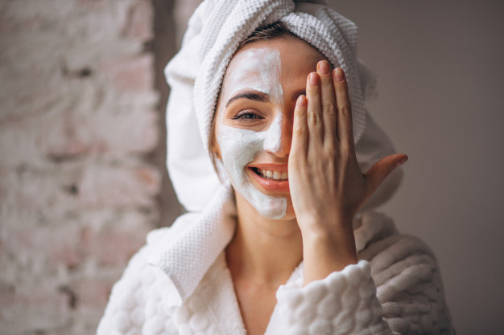

1-منظف البشرة
يُعتبر غسول الوجه أساس روتين العناية بالبشرة، فالبشرة النظيفة والمشرقة لا يمكن الحصول عليها إلا باستخدام غسول لطيف على بشرتك، تستخدمينه صباحاً ومساءً، فهو يطهرها من السموم والغبار والأتربة وأي شوائب أخرى، مما يقيها من البثور ويجعلها مشرقة على الدوام.
2-الواقي الشمسي
يعد الواقي الشمسي أحد أكثر منتجات العناية بالبشرة أهمية لكل امرأة، فهو يمنع شيخوخة البشرة ويقي من الإصابة بسرطان الجلد، بالتالي من الضروري ألا يفارق حقيبتك، طبقي منه مرات عدة في اليوم على الوجه والجسم لا سيما عند التعرض الكثيف لأشعة الشمس.
3-سيروم الفيتامين C
يحافظ الفيتامين سي على توهج البشرة ويمنع إصابتها بفرط التصبغ، كما يعمل على التخلص من بهتانها واصفرارها. بالتالي، استخدمي دائماً السيروم الغني بالفيتامين C، ولا تستغني عنه إطلاقاً.
4-مقشر البشرة
عندما تتراكم الخلايا الميتة على سطح البشرة، ففهي تتداخل مع انعكاس الضوء، مما يعطي البشرة مظهراً باهتاً. وبالتالي، فإن التقشيراليدوي اللطيف يساعد في إزالة الأوساخ وتراكم الزيوت، وإعادة الإشراقة الى البشرة. انطلاقاً من ذلك، ضعي في حقيبتك دائماً مقشراً لطيفاً ملائماً لنوع بشرتك.
5-التونر
هذا المستحضر ليس مخصصاً فقط للبشرة الدهنية أو تلك المعرضة لحب الشباب. فاستخدامه صباحاً يساعد في تطهير البشرة وجعلها سريعة الامتصاص لكريمات الصباح، كما يعمل على تقليص المسامات الواسعة للبشرة.
6-كريم الترطيب
يعمل هذا المستحضر على ترطيب البشرة الجافة، لذا قومي بتطبيقه قبل استخدام أي كريم آخر، فيمنح بشرتك ذات مظهر لامع ومتألق. وينصح المتخصصين باستخدام رذاذ مرطب للبشرة مرات عدة في اليوم.
7-ماسك الوجه
يحتل ماسك الوجه أهمية كبرى في روتين العناية بالبشرة، فهو يغذي البشرة ويرطبها ويعمل على تفتيح لونها. ويُنصح باستخدام الماسكات الغنية بالزيوت الطبيعية ومضادات الأكسدة.